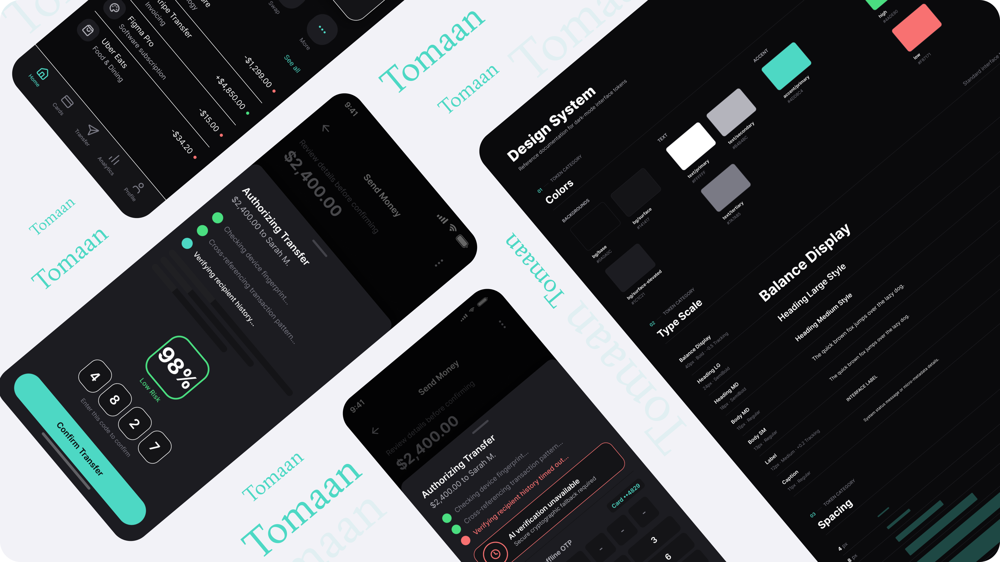

Generative Latency
They are slow relative to user expectation. AI checks take time, and a static loading spinner over that duration reads as "broken," which destroys systemic trust.

This concept asks a narrow, difficult question: can a real-time AI fraud check sit on top of an offline one-time-password (OTP) system without weakening the one guarantee that makes it trustworthy? That guarantee is that your code never has to travel anywhere to prove who you are.
At Carrene, I designed the interfaces for offline OTP apps used to protect card transactions for a security-conscious banking user base. Those apps scaled past 2 million users. The core mechanism generated a code entirely offline, valid for 60 seconds. Tomaan explores adding a generative AI judgment layer to this proven system to stop authorized fraud without ever touching the offline guarantee underneath it.
Three things are true about generative security checks that were not true about deterministic offline flows:
They are slow relative to user expectation. AI checks take time, and a static loading spinner over that duration reads as "broken," which destroys systemic trust.
They are probabilistic. The old flow did not guess, a code either matched or it did not. An AI fraud check only estimates, and that uncertainty must be shown clearly.
An AI layer can fail quietly by timing out, degrading, or hallucinating. The interface needs a way to say "this part of the system isn't sure" without triggering panic.
I designed three core screens that answer these constraints directly, focusing on human control and recovery states.


If bringing this into a real production environment, I would resolve these UX risks with the security and engineering teams:
Confidence indicators need to earn their visibility. If every transaction shows a badge, users stop reading them. We need usage data to decide how often to surface the chip versus staying silent.
This designs the happy path and the timeout path. The missing state is genuine uncertainty. My proposal is a distinct screen requiring a slow-press hold confirmation that names specific doubts in plain language.
Note: Tomaan is a conceptual design exploration of AI patterns, not a validated machine learning product. It builds on real work I did at Carrene designing offline OTP interfaces for a security-conscious banking user base.